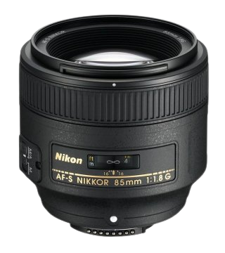
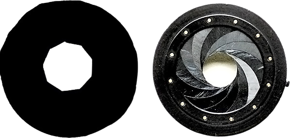

Aparaty fotograficzne
Filip Ferencz 3gs
Klasyczny aparat fotograficzny jest urządzeniem przystosowanym do naświetlania materiału światłoczułego, umieszczanego we wnętrzu aparatu w postaci zwiniętej błony, wymiennej kasety z błonami ciętymi lub też kliszy szklanej.
Aparat cyfrowy zapisuje obraz podobnie jak informacje zapisywane są w pamięci komputera. Jego zaletą jest to, że otrzymane zdjęcia mogą być w prosty sposób modyfikowane na komputerze, a następnie drukowane w dowolnej liczbie kopii.
Rodzaje aparatów fotograficznych

Aparat lustrzanka
Wyposażony jest w lustro i matówkę. Zadaniem zespołu lustra i matówki jest dokładna prezentacja bieżącego kadru. Rozwiązanie takie ma znaczenie przy precyzyjnym nastawianiu odległości fotografowania.
Dzięki wyposażeniu aparatu lustrzanego w lustro i matówkę umożliwia on ustawienie takich parametrów jak głębi ostrości, aberracji optycznych, kadrowania obiektów nieodległych. Sprzyja również kompozycji kadru czy ocenie proporcji oświetlenia.
Lustrzanki możemy podzielić na:
- klasyczne,
- cyfrowe - tzw. DSRL - rolę materiału światłoczułego spełnia matryca światłoczuła; w zależności od rozwiązania jest to matryca CCD lub matryca CMOS,
- jednoobiektywowe - wyposażona w pojedynczy obiektyw oraz ruchome lustro, które odbija światło z obiektywu na matówkę, umożliwiając podgląd obrazu,
- dwuobiektywowe - charakteryzujące się zwartą i sztywną konstrukcją. Górny obiektyw z lustrem i matówką służy do kadrowania i ustawiania ostrości, a dolny do wykonywania zdjęć
Aparat bezlusterkowy
jest to aparat cyfrowe, które nie posiada lustra. Zastosowanie matryc cyfrowych umożliwia zapis zdjęć oraz podgląd na żywo tego, co widzi aparat przez obiektyw. Materiał światłoczuły w postaci matrycy znajduje się tuż za obiektywem.
W początkowym okresie w bezlusterkowcach wykorzystywano autofokus oparty na detekcji kontrastu, który nadal z bardzo dobrymi rezultatami jest oferowany w systemie Mikro 4/3
Z czasem producenci zaczęli wzbogacać swoje bezlusterkowce w czujniki fazy, które zdecydowanie lepiej sprawdzają się na większych matrycach APS-C albo FF.
Aparaty bezlusterkowe nie posiadają lustra, co sprawia, że przy identycznym rozmiarze matrycy zapewniają mniejsze rozmiary niż lustrzanki.
Taka różnica nie dotyczy jednak samych obiektywów, które mają podobne gabaryty. Oznacza to w praktyce, że pełnoklatkowy bezlusterkowiec będzie miał podobne rozmiary obiektywów, co pełnoklatkowa lustrzanka.
Aparat kompaktowy
charakteryzuje się niewielkimi rozmiarami, dość ograniczoną liczbą funkcji dodatkowych, a często w ogóle brakiem trybu manualnego. Posiada stały obiektyw, którego nie można wymienić.
Pod względem gabarytów aparaty kompaktowe zaliczają się najmniejszych na rynku. Istnieją natomiast wśród nich modele dość duże, wyposażone w matryce, pełnoklatkowe albo APS-C, jak np. Leica Q, Sony RX1 czy Fujifilm X70, jednak w tej klasie aparatów są to i tak najmniejsze propozycje.
Aparaty kompaktowe to bardzo różnorodna grupa, w której znajdziemy aparaty od kieszonkowych, wodoodpornych, przez superzoomy, do tych wyposażonych w pełnoklatkową matrycę i stałoogniskowe obiektywy.
Aparat dalmierzowy
jest to rodzaj aparatu fotograficznego z wbudowanym dalmierzem. Ustawianie ostrości w takim aparacie polega na ręcznym spasowaniu podwójnego obrazu, uzyskanego ze stereoskopowego układu celowniczego.
Aparaty dalmierzowe mogą być małoobrazkowe oraz średnioformatowe. Najbardziej znane marki klasycznych aparatów małoobrazkowych dalmierzowych to m.in. Leica, Contax, Voigtlander, Canon, Nikon, Olympus, Minolta.
Budowa aparatu fotograficznego
Do podstawowych elementów aparatu należą:
- obiektyw
- korpus światłoczuły
- migawka
- przysłona
- wizjer
Obiektyw to układ optyczny umożliwiający rzutowanie obrazu widzianych obiektów na matówkę (wizjer), błonę fotograficzną lub matrycę. W soczewkach wykorzystuje się zjawisko załamania światła. Charakteryzuje się ona ogniskową, czyli odległością między środkiem soczewki a punktem, w którym skupione są promienie światła. Im dłuższa ogniskowa, tym mniejszy kąt widzenia, ale większe zbliżenie. Obiektywy pozwalają natomiast na zbliżenie optyczne.
Korpus aparatu fotograficznego zapobiega przenikaniu światła i chroni delikatne części wewnętrzne.
Migawka to urządzenie do otwierania i zamykania drogi światłu, które pada na materiał światłoczuły. Warto tutaj wspomnieć o różnicy między aparatem cyfrowym a analogowym – pierwszy z nich zamiast filmu (rolki) posiada półprzewodnik nazywany przetwornikiem obrazu, który jest matrycą z setką tysięcy lub milionami elementów światłoczułych. To ona decyduje o rozdzielczości zdjęć.
Przysłona to kilka blaszek o sierpowatym kształcie zachodzących jedna na drugą w taki sposób, by mogły rozsuwać się i zsuwać, zmieniając średnicę otworu, przez który wpada światło. Kontroluje ona intensywność światła wpadającego do aparatu.
Wizjer umożliwia obserwację sceny i ocenę ostrości fotografowanego przedmiotu.
Działanie aparatu fotograficznego
W jaki sposób działają klasyczne aparaty fotograficzne?
Obraz przechodzi przez obiektyw, przesłonę i migawkę, będąc rzucanym na przetwornik obrazu czyli matrycę CCD. W aparatach cyfrowych ma ona postać mozaiki – aby uzyskać kolorowy obraz, na monochromatyczne elementy czułe nałożone są filtry kolorowe. Po odczytaniu obrazu z matrycy, trafia on do przetwornika, a stąd na ekran LCD lub do wyjścia A/V. Druga magistrala biegnie do nośnika danych, gdzie magazynuje się pliki.
W jaki sposób działa aparat lustrzanka?
W optycznym wizjerze dostrzegamy obraz rzutowany na matówkę (wizjer) bezpośrednio z obiektywu poprzez uchylne lustro, które zasłania migawkę i matrycę. Gdy wykonujemy zdjęcie, lustro unosi się, a światło pada bezpośrednio na matrycę.
W jaki sposób działa aparat cyfrowy?
Układ optyczny tworzy obraz na przetworniku fotoelektrycznym (CCD, CMOS), a współpracujący z nim układ elektroniczny odczytuje informacje o tym obrazie i przetwarza na postać cyfrową w układzie zwanym przetwornikiem analogowo-cyfrowym.
Dane w postaci cyfrowej są zapisywane w plikach danych, w jednym z formatów zapisu obrazu – zazwyczaj JPEG (kompresja stratna), TIFF (kompresja bezstratna) lub RAW (pełna informacja z matrycy aparatu) – w cyfrowej pamięci aparatu.